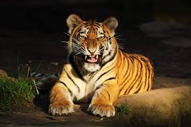

Перейти на главную
Практическое задание №1
Амурские тигры

Амурский тигр - гордый хищник, Амурские тигры живут в охраняемой зоне на юго-востоке России, по берегам рек Амур и Уссури
Особенности жизнедеятельности
- Амурские тигры живут в охраняемой зоне на юго-востоке России
- На Российском Дальнем Востоке обитает 523—540 амурских тигро
- Основу рациона составляют изюбрь, пятнистый олень, косули, кабаны, гималайские медведи, лоси
Кто охраняет тигра
- Центр "Амурский тигр"
- национальный парк "Земля леопарда"
Ссылка на Википедиа